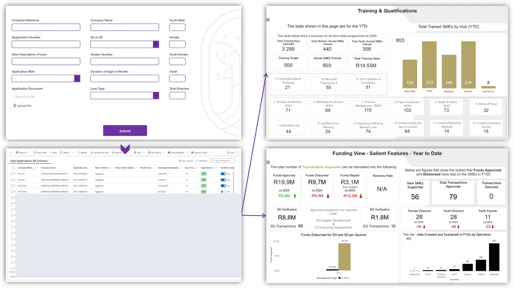

Business apps
Loans System with Dashboard
A loan application system and branded Power BI reports cut client reporting time from five to seven hours to under five minutes.

Context
The company was using Microsoft Access to manage loans, which was not scalable, prone to errors, and inefficient, taking 5-7 hours to generate client reports.
Objective
I was responsible for designing a scalable database and implementing a Power Apps solution to streamline loan processing, reduce errors, and enable faster reporting for multiple clients with customized needs.
My contribution
I designed the database and joined the team maintaining the app, which includes a module replacing Excel-based applications for business development officers via an embedded WordPress hub panel, eliminating email-based submissions and reducing errors and fraudulent applications; I also built custom Power BI reports for clients, incorporating each company’s branding and corporate colours.
Outcome
The new Loan Management System improved accuracy, reduced processing errors, and cut report generation time from 5-7 hours to under 5 minutes, while enabling client-specific customization and a secure, streamlined loan application process.